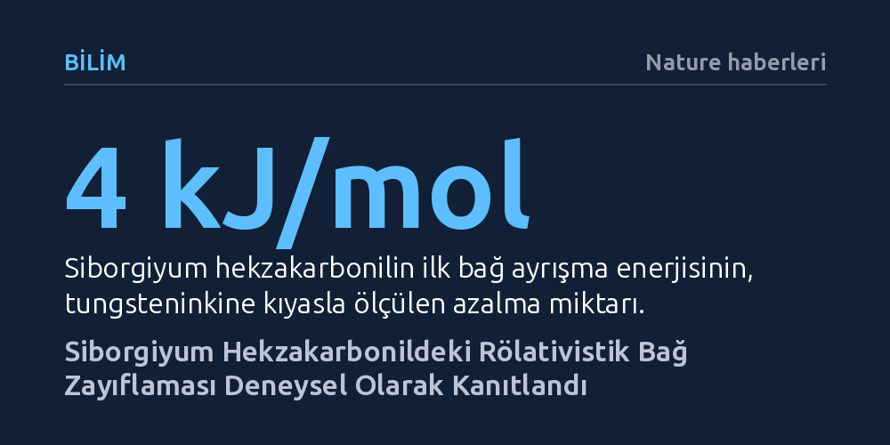

BILIM · Nature haberleri · 2026-10-08
Siborgiyum hekzakarbonil kompleksi üzerinde yapılan gaz kromatografisi ölçümleri, periyodik tablonun 6. grubunda aşağı inildikçe artan bağ gücü eğiliminin ilk kez tersine döndüğünü gösterdi. Bu bağ zayıflaması, süper ağır elementlerde rölativistik etkilerin kimyasal özellikleri doğrudan değiştirdiğini deneysel olarak kanıtlıyor.
Einstein'ın görelilik kuramının süper ağır elementlerin kimyasal bağlarını nasıl bizzat zayıflattığını ve periyodik tablonun yerleşik eğilimlerini nasıl bozduğunu ilk kez doğrudan bir kimyasal deneyle gösteriyor.

Periyodik tabloda aynı sütunda, yani aynı grupta aşağı doğru inildikçe elementlerin benzer kimyasal davranışlar sergilemesi ve belirli periyodik eğilimleri koruması beklenir. Örneğin 6. grupta yer alan krom, molibden ve tungsten metallerinin karbonil bileşiklerinde, metal ile karbonmonoksit ligandı arasındaki ilk bağ ayrışma enerjisi yukarıdan aşağıya inildikçe düzenli olarak artar. Ağırlaştıkça bağın kuvvetlenmesi kuralı, onlarca yıldır kimyanın temel kabullerinden biri olarak geçerliliğini korumuştur.
Ancak periyodik tablonun yedinci periyodundaki süper ağır element siborgiyum (atom numarası 106) devreye girdiğinde bu kural bozuldu. Araştırmacılar, siborgiyum hekzakarbonil kompleksindeki metal-karbon bağının, hemen bir üst sıradaki tungsteninkinden daha zayıf olduğunu tespit etti. Ölçülen bağ ayrışma enerjisi, tungsten hekzakarbonile kıyasla mol başına yaklaşık 4 kilojul daha düşük çıktı. Böylece periyodik tablonun 6. grubunda süregelen bağ güçlenme eğilimi ilk defa bir süper ağır elementte yön değiştirerek tersine döndü.
Süper ağır elementlerle kimyasal deney yürütmek, olağanüstü fiziksel kısıtlar nedeniyle modern bilimin en zorlu alanlarından biridir. Siborgiyum doğada bulunmaz; nükleer füzyon reaksiyonlarında kurşun hedeflerin krom iyonlarıyla bombardıman edilmesiyle tek tek üretilir. Üstelik bu deneyde kullanılan siborgiyum-259 izotopunun yarı ömrü saniyenin üçte birinden bile kısadır. Almanya'daki GSI tesislerinde iki hafta süren aralıksız hızlandırıcı çalışmasında, hedefe milyarlarca iyon fırlatılarak yalnızca tekil siborgiyum atomları elde edilebildi.
Üretilen atomlar hızla helyum ve karbonmonoksit gaz karışımının bulunduğu transfer hücresine aktarılarak gaz fazında kimyasal tepkimeye sokuldu. Ortaya çıkan bileşikler, uçuculuklarına göre ayrışan iki kademeli bir gaz kromatografisi sistemine yönlendirildi. Tam doymamış ve uçucu olmayan ara parçalar oda sıcaklığındaki ilk dedektör yüzeyine hızla yapışırken, kararlı ve uçucu hekzakarbonil molekülleri altın kaplı ikinci dedektöre ulaştı. Deney boyunca altın yüzeyinde yalnızca üç adet siborgiyum bozunma zinciri yakalanabildi; bu son derece hassas veri, istatistiksel ve kinetik modellemelerle birleştirilerek bağ enerjisine dönüştürüldü.
Bu beklenmedik bağ zayıflamasının kökeninde, Albert Einstein'ın özel görelilik kuramının atomik ölçekteki doğrudan etkileri yatıyor. Siborgiyum gibi 106 proton barındıran devasa çekirdeklerde, muazzam pozitif elektrik yükü çekirdeğe en yakın iç elektronları ışık hızına yaklaşan süratlere ulaştırır. Görelilik etkisiyle kütlesi artan iç elektron yörüngeleri büzülür ve çekirdeğe yaklaşır. Bu büzülme, çekirdeğin çekim gücünü perdeleyerek en dıştaki 6d değerlik elektron orbitallerinin çekirdekten uzaklaşmasına, uzaysal olarak genişlemesine ve enerjilerinin yükselerek kararsızlaşmasına neden olur.
Karbonmonoksit ile metal atomu arasındaki kimyasal bağ, karşılıklı bir elektron alışverişine dayanır: ligand metal orbitaline elektron sağlarken, metalin d orbitalleri de karşıt bağ orbitallerine elektron aktarır. Siborgiyumun 6d orbitallerindeki rölativistik kararsızlaşma, bu elektron transfer süreçlerinin her ikisini de körelterek bağın zayıflamasına yol açar. Klasik kuantum modelleri bağın güçlenmeye devam edeceğini öngörürken, rölativistik Dirac-Coulomb hesaplamalarının tam olarak öngördüğü bu zayıflama, deneyle kusursuz bir uyum sergiledi.
Elde edilen sonuçlar, periyodik tablonun en uç noktalarında kimyasal davranışların artık yalnızca klasik grup kurallarıyla açıklanamayacağını kesinleştiriyor. Süper ağır elementler dünyasında rölativistik etkiler ikincil bir düzeltme olmaktan çıkıp periyodik eğilimleri kökten değiştiren belirleyici bir kuvvete dönüşüyor. Daha önce kopernisyum ve flerovyum gibi elementlerde gözlenen alışılmadık soy gaz benzeri davranışların ardından, ilk kez bir geçiş metalinde bağ ayrışma enerjisi seviyesinde bu dönüşüm somutlaştırıldı.
Deneyde başarıyla uygulanan tek-atom gaz kromatografisi yöntemi, ömrü bir saniyenin altında olan izotopların dahi temel kimyasal parametrelerinin ölçülebileceğini kanıtladı. Bu yaklaşım, periyodik tablonun yedinci satırında yer alan diğer süper ağır elementlerin kimyasal bağlarını incelemek ve göreliliğin maddeyi hangi sınırlarda nasıl yeniden şekillendirdiğini anlamak için yeni bir kapı aralıyor.